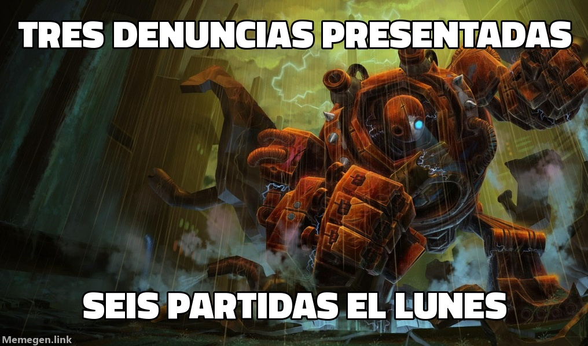

SOCIEDAD · Ecos de Jonia
Entrevista
Blitzcrank pide la jornada de ocho horas
El gólem que denunció tres veces a Saiko le ha subido a Esmeralda III. Ahora quiere cobrar.

Blitzcrank, el gólem de vapor de Zaun que en dos semanas ha presentado tres denuncias contra Saiko, salió de casa a las 17:11 del lunes y no volvió hasta pasada la medianoche. Seis partidas seguidas, cuatro victorias y un ascenso a Esmeralda III para su dueño. Nos recibe en el taller, con el aceite todavía caliente.
—¿Cómo fue el día?
—Productivo. Para él. Yo lanzaba el gancho y él cobraba los puntos. En Zaun a eso lo llaman convenio colectivo.
—Cuatro de seis. ¿No está contento?
—Estaba contento a las once. A las 23:14 me sacó otra vez. A los dos minutos ya habíamos regalado la primera sangre y en los diez primeros me habían desmontado cuatro veces. Acabé con once muertes.
—Pusieron muchos guardianes.
—Los puse yo. 34. Para que se viera bien, desde todos los ángulos, cómo me desmontaban. Daño a objetivos: cero. Soy una máquina de asedio que no ha tocado un ladrillo en toda la noche.
—¿Habrá cuarta denuncia?
—No. Las denuncias no sirven: cada vez que le denuncio, me vuelve a coger y gana. Ahora negocio. Pido ocho horas y que la sexta partida sea voluntaria.
—¿Y si no se la conceden?
—También me tiene en el reto, y va primero. Si me pongo en huelga, el que pierde el liderato es él.